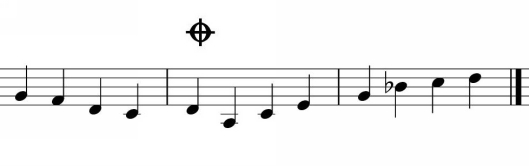

Figure 1.15.
A coda is used to write an ending to a piece of music or a section of a piece, particularly when the section that immediately precedes the ending in the music is not the section that immediately precedes it on the page (for instance, when a repeat has been used).
These are often used as follows: A coda is written at the end of the section or piece (marked by the coda sign). Then, another coda symbol is placed earlier in the piece. The words "D. C. Al Coda" are written somewhere between those two symbols, and when the player reaches those words, they return to the beginning of the piece, play it through until they reach the first coda sign, and then skip to the second coda sign and play the coda (the ending, or tail).